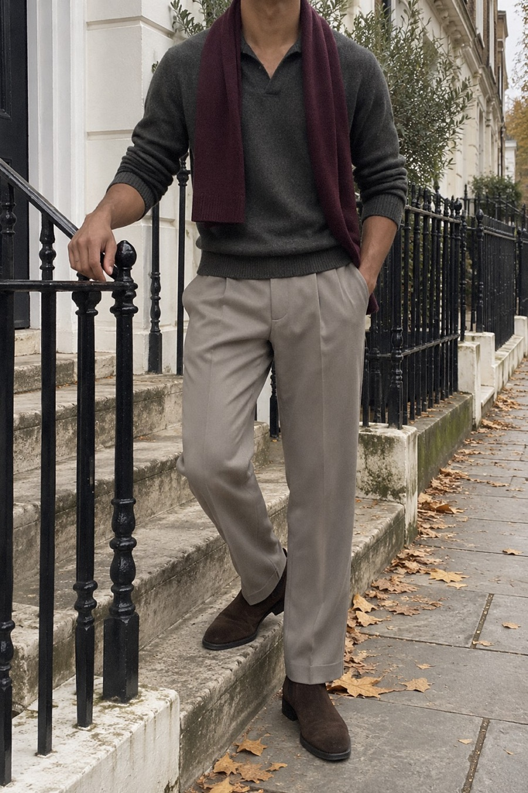
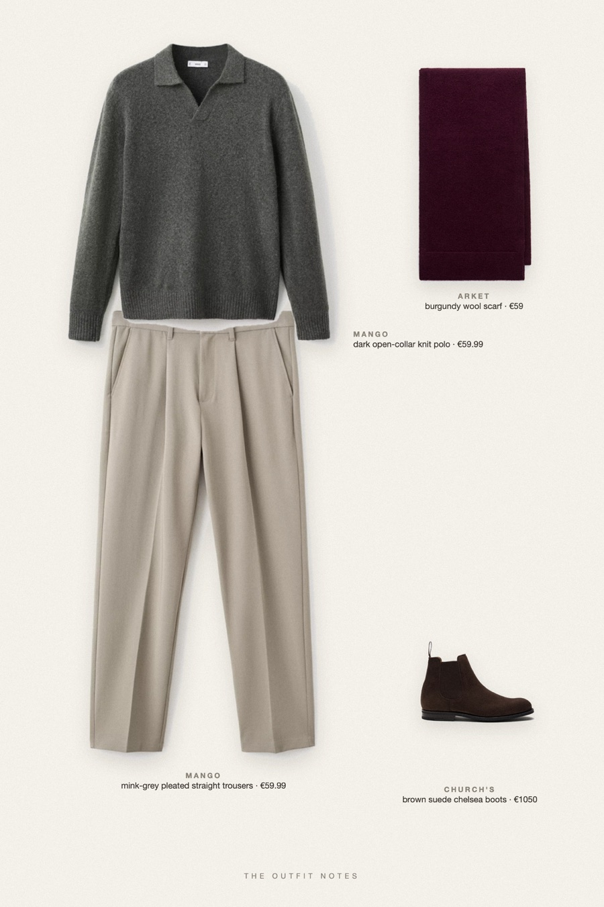

Green Hush
forest knit, mink trousers


Fall outfit for men with a quiet luxury feel: Mango dark green wool knit polo over fluid mink grey pleated trousers, brown suede Church's Chelsea boots and a burgundy ARKET wool scarf as the only accent. Textured top, draped bottom, a silhouette that looks expensive without trying hard.
The pieces
This page contains affiliate links: if you buy through them, we may earn a commission at no extra cost to you. Disclosure.
 Mango
Mango
Dark open-collar knit polo
Shop Mango
Mango
Mink-grey pleated straight trousers
Shop Church's
Church's
Brown suede chelsea boots
Shop ARKET
ARKET
Burgundy wool scarf
Shop
Prices are indicative, taken when the look was published, and may have changed. Pictures of the outfit are AI-generated illustrations of real products; the product photos are the retailers' own.
Published 1 October 2026.